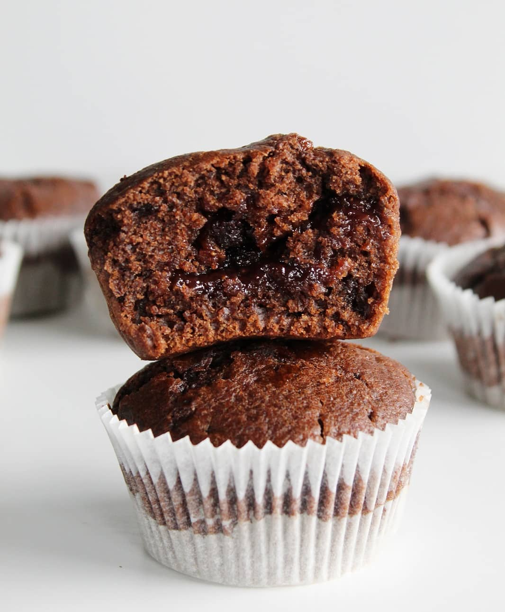

SESTAVINE:
POSTOPEK:
maslo in čokolado razpusti nad vodno paro, medtem v prvi posodi stepi jajce.
V drugi posodi zmešaj moko, pecilni prašek, sladkor in vanili sladkor.
V stopljeno maslo in čokolado zmešaj jogurt, mleko in tisti stepeni jajci v prvi posodi.
To maso zmešaj k tisti masi v drugi posodi.
Vse skupaj premešaj in dodaj čokoladne koščke.
Maso napolni malo čez polovico papirja.
PEČI NA 180 stopinj ZA 25 minut.
